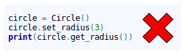
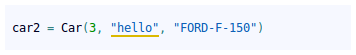
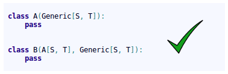

Contributing¶
Contributions to the jMetalPy project are welcome. Please, take into account the following guidelines (all developers should follow these guidelines):
Git WorkFlow¶
We have a set of branches on the remote Git server. Some branches are temporary, and others are constant throughout the life of the repository.
- Branches always present in the repository:
- master: You have the latest released to production, receive merges from the develop branch, or merge from a hotfix branch (emergency).
Do I have to put a TAG when doing a merge from develop to master? yes
Do I have to put a TAG when doing a merge from a hotfix branch to master? yes
After merge from a hotfix to master, do I have to merge from master to develop? yes
develop: It is considered the “Next Release”, receives merges from branches of each developer, either corrections (fix) or new features (feature).
- Temporary branches:
- feature/<task-id>-<description>: When we are doing a development, we create a local branch with the prefix “feature/”, then only if there is a task id, we indicate it and we add a hyphen. The following we indicate a description according to the functionality that we are developing. The words are separated by hyphens.
Where does this branch emerge? This branch always emerge from the develop branch
When I finish the development in my feature branch, which branch to merge into?: You always merge feature branch into develop branch
- fix/<task-id>-<description>: When we are making a correction, we create a local branch with the prefix “fix/”, then only if there is a task id, we indicate it and we add a hyphen. The following we indicate a description according to the functionality that we are correcting. The words are separated by hyphens.
Where does this branch emerge? This branch always emerge from the develop branch
When I finish the correction in my fix branch, which branch to merge into?: You always merge feature branch into develop branch
- hotfix/<task-id>-<description>: When we are correcting an emergency incidence in production, we create a local branch with the prefix “hotfix/”, then only if there is a task id, we indicate it and we add a hyphen. The following we indicate a description according to the functionality that we are correcting. The words are separated by hyphens.
Where does this branch emerge?: This branch always emerge from the master branch
When I finish the correction in my hotfix branch, which branch to merge into?: This branch always emerge from the master and develop branch
- Steps to follow when you are creating or going to work on a branch of any kind (feature / fix / hotfix):
After you create your branch (feature / fix / hotfix) locally, upload it to the remote Git server. The integration system will verify your code from the outset.
Each time you commit, as much as possible, you send a push to the server. Each push will trigger the automated launch of the tests, etc.
Once the development is finished, having done a push to the remote Git server, and that the test phase has passed without problem, you create an pull request.
Note
Do not forget to remove your branch (feature / fix / hotfix) once the merge has been made.
Some useful Git commands:
git fetch –prune: Cleaning branches removed and bringing new branches
PEP8!¶
It is really important to follow some standards when a team develops an application. If all team members format the code in the same format, then it is much easier to read the code. PEP8 is Python’s style guide. It’s a set of rules for how to format your Python code.
Some style rules:
Package and module names: Modules should have short, all-lowercase names. Underscores can be used in the module name if it improves readability. Python packages should also have short, all-lowercase names, although the use of underscores is discouraged. In Python, a module is a file with the suffix ‘.py’.
Class names: Class names should normally use the CapWords convention.
Method names and instance variables: Lowercase with words separated by underscores as necessary to improve readability.
There are many more style standards in PEP8 so, please, refer to PEP8 documentation . The most appropriate is to use an IDE that has support for PEP8. For example, PyCharm.
Object-oriented programming¶
Object-oriented programming should be the single programming paradigm used. Avoiding as far as possible, imperative and functional programming.


In classes, we directly access the attributes, which are usually defined as public.

Only when we want to implement additional logic in the accesses to the attributes we define getter/setter methods, but always by using the *property* annotation or the *property* function:


By using *property*, we continue to access the attributes directly:

Do not use getter/setter methods without the property annotation or the property function:

Since this way of accessing the attribute is not commonly used in Python:
Structure¶
Python is not Java. In Java you cannot, by design, have more than one class in a file. In Python, you can do it.
In Python, it is appropriate to group several classes into a single .py file. For that reason, the .py files are called modules.
Python 3.6¶
We always define types in the parameters of the arguments and the return value:

We can define abstract classes (ABCs) in Python:

In the case that we want to define an interface class, it is done in the same way. We just have to define all the methods of the class as abstract.
Example of use of generic types:

In the code below, the IDE displays a warning, since although the 2nd parameter is a float type, which is a type allowed in the definition of the generic type X, it is not of the same type as the first, since the first 2 parameters must be of the same generic type (S):

In the code below, the IDE displays a warning, since the 2nd parameter is a type not allowed in the definition of the generic type ( TypeVar(‘S’, int, float) ):
When the class inherits from Generic[…], the class is defined as generic. In this way we can indicate the types that will have the values of the generic types, when using the class as type. Look at the add_car() method of the Parking class.
Note
The generic classes inherit from abc.ABCMeta, so they are abstract classes and abstract methods can be used.

In the code below, the IDE displays a warning in the call to the add_car() method when adding the car, since the 3rd parameter of the init must be a str type, as defined in the add_car() method of the Parking class.

When inheriting from generic classes, some type variables could be fixed:

Example of inheritance from non-generic class to generic class:

Example of inheritance from generic class to another generic class:
Create automatic documentation files with Sphinx¶
First, you need to know how to correctly document your code. It is important to follow these simple rules in order to automatically create good documentation for the project.
When you create a new module file (testDoc.py in this example), you should mention it using this format:
"""
.. module:: testDoc
:platform: Unix, Windows
:synopsis: A useful module indeed.
.. moduleauthor:: Andrew Carter <andrew@invalid.com>
"""
class testDoc(object):
"""We use this as a public class example class.
This class is ruled by the very trendy important method :func:`public_fn_with_sphinxy_docstring`.
.. note::
An example of intersphinx is this: you **cannot** use :mod:`pickle` on this class.
"""
def __init__(self):
pass
This code snippet generates the following documentation:

Now, you can document your methods using the following sintax:
def public_fn_with_sphinxy_docstring(self, name: str, state: bool = False) -> int:
"""This function does something.
:param name: The name to use.
:type name: str.
:param state: Current state to be in.
:type state: bool.
:returns: int -- the return code.
:raises: AttributeError, KeyError
"""
return 0
def public_fn_without_docstring(self):
return True
And the produced output doc will be:

As you may notice, if you don’t use any docstring, the method documentation will be empty.